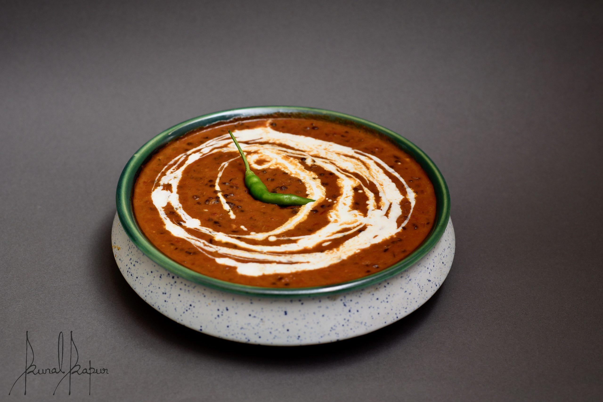

DAL MAKHANI

Dal Makhani Recipe
Restaurant Style Dal Makhani Recipe with detailed photo and video recipe. A popular North Indian or Punjabi Cuisine creamy & rich dal recipe prepared with black urad dal and kidney beans. Unlike other lentil or dal recipes, this black-coloured dal is known for its creamy, rich and savoury flavoured texture. The texture of this makhni dal is achieved mainly by slow-cooking the lentils and kidney beans.
INGREDIENTS(serves 1)
For pressure cooking dal:
- ¾ cup whole black urad dal / sabut urad dal
- ¼ cup kidney beans / rajma
- water for soaking
- 3 cups water (for pressure cooking)
- salt
For Dal Makhani:
- 1-2 tbsp ghee
- 1 bay leaf
- 2 large tomatoes(finely chopped)
- 1 tsp ginger-garlic paste
- ½ tsp turmeric powder
- one large onion (finely chopped)
- 1 tsp coriander powder
- ½ tsp cumin powder
- 1 tsp kashmiri chilli powder (or as per your spice level)
- salt to taste
- 1 cup water (or as required)
- 2 tbsp fresh cream (or as required)
- few coriander leaves (chopped)
For tempering:
- 1 tbsp ghee
- generous pinch hing / asafoetida
- ¾ tsp kashmiri red chilli powder
- ¼ tsp garam masala (optional)

INSTRUCTIONS
Pressure cooking dal recipe
- take 1 cup of black urad dal and ¼ cup of rajma in a large bowl.
- add enough water and soak overnight or atleast for 8 hours.
- rinse the dal in a running water and transfer into a cooker. add 3 cups of water.
- add some salt to taste
- close the lid and pressure cook on medium flame for 5 whistles. or till the dals are cooked completely.
Dal makhani recipe:
- in a large kadai add a tbsp of ghee and saute bay leaf for a minute. or till they turn fragrant.
- then add finely chopped onions and saute till they change in colour.
- once onions are done, add ginger-garlic paste. saute till raw smell disappears completely.
- now add chopped tomatoes and cook till they are soft.
- add turmeric, coriander powder, cumin powder, chilli powder and salt to taste. cook the masalas for a minute.
- once the masalas start releasing oil from sides, add cooked dal and give a good stir
- adjust the consistency by adding 1 cup of water or as required.
- boil for 15 minutes or more till the dal absorbs flavour and turns thick.
- to get the creamy texture, add 2 tbsp of fresh cream. you can also skip or increase the amount of cream according to your preference.